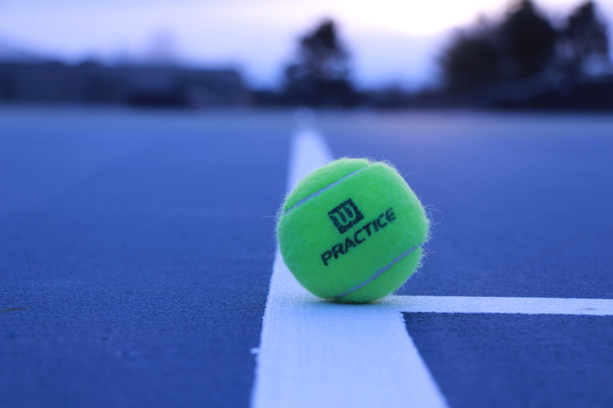
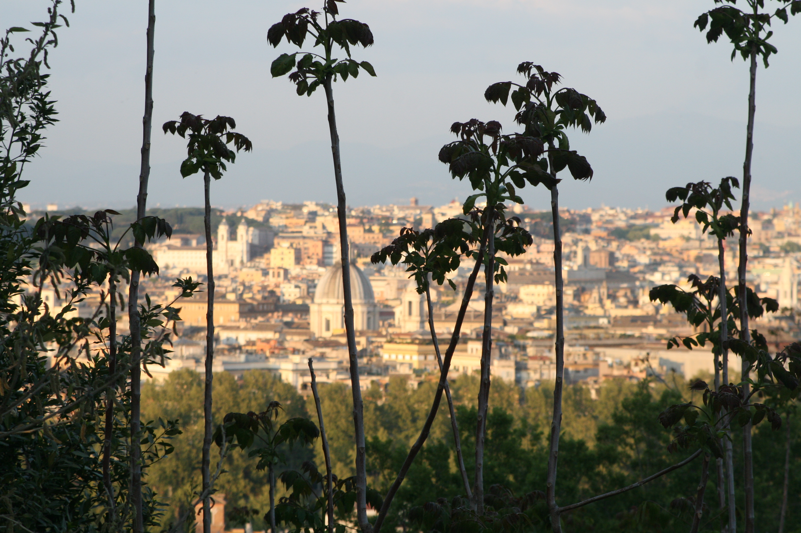
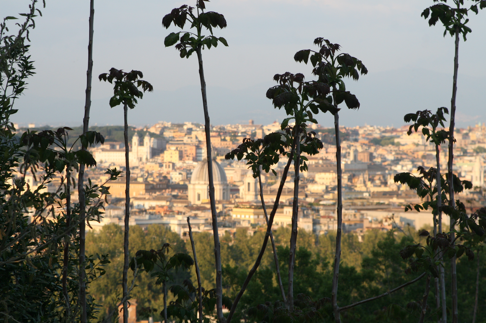

Juliette Astier
Passionnée, déterminée, polyvalente et rigoureuse

Passionnée, déterminée, polyvalente et rigoureuse
Actuellement étudiante en école de commerce, j'aimerais à la suite de mes études, être amenée à animer une équipe,
si possible dans un contexte international.

EMLV - École de Management Léonard de Vinci (92) Septembre 2019 - Juillet 2024

Lycée Alain, Le Vésinet (78) Septembre 2016 - Juin 2019
Baccalauréat Économique et Social Obtenu en Juin 2019
Membre de l'association ESN DeVinci Septembre 2019
Membre de l'association Scouts et Guides de France Septembre 2013 - Juillet 2018
- Hôtesse : opération de codistribution 20 Minutes-Monoprix (distribution de journaux)
Stage d’observation de Seconde – Janvier 2017
- Rendez-vous avec des clients
- Audiences de plaidoiries
- Consultation de dossiers
- Secrétariat : classement et archivage
- Échanges avec différents avocats sur les stratégies de défense
Stage d’observation de Troisième – Décembre 2015
- Production boutique (cookies, oursons, tartelettes...) - Préparation des pâtes de base - Conseil de la clientèle sur ses choix - Préparation des commandes
Anglais

Espagnol
Pack Office : Gestion scolaire : études de cas (Word), création de présentations PowerPoint
Réseaux sociaux : Instagram (création d'un story telling sur Instagram); Facebook
Codage : HTML, CSS
Hobbies...

Cela fait maintenant 12 ans que je fais du tennis. Mon club
Différents tournois auxquels j'ai pu assister : Rolex Paris Masters
et Roland Garros
Ces sports m’ont incité au dépassement de soi.
J'ai toujours apprécié faire du VTT dans la forêt de Saint Germain en Laye (78). J'ai également participé plusieurs fois à la Jean Racine, course de VTT organisée à St Rémy les Chevreuses (78).
J'ai appris à jouer du piano lorsque j'étais en primaire, durant cinq ans.
Ce qui m’a permis de développer ma créativité.
Baby-sitting régulier dans une famille de trois enfants de 3 mois à 10 ans. J’apprécie voyager et découvrir de nouvelles cultures. J’ai eu l’occasion de visiter différentes régions du monde, en Italie, Angleterre, États-Unis, Grèce et aussi en Thaïlande.

 
Croissy sur Seine, 78290
astierj.juliette@gmail.com
EMLV, A1, Promo 2024